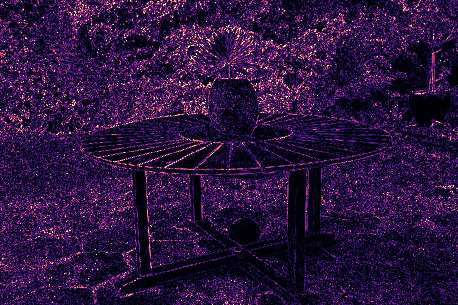
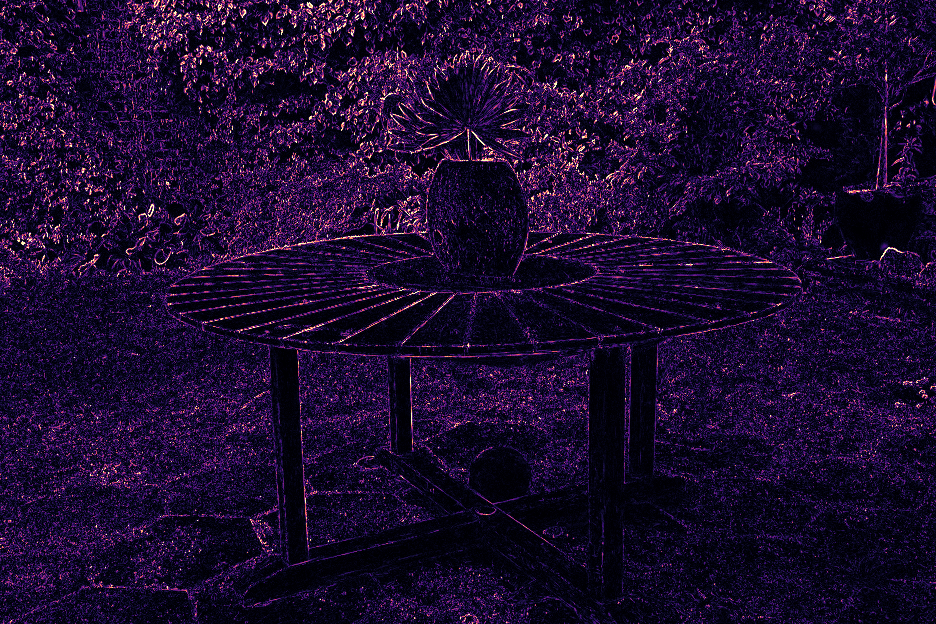

History-Based Spatial Resampling
Neighboring pixels see similar color distributions, so each sample can also serve its neighbors. Plain averaging blurs the image; instead, we weight every reused sample by how likely it is at the target pixel relative to its source pixel, which keeps the introduced bias minimal. The occlusion part of these weights would normally require sorting. Since a model trained with Lvar has very few relevant occluders per pixel, we approximate it from a small buffer of the K most recent samples at each pixel.
Why Spatial Resampling Works
Two neighboring pixels A and B usually see similar, but not identical color distributions (\(p_A \approx p_B\)). With one sample per pixel, both are noisy. With resampling, each pixel also reuses its neighbor's sample, weighted by how likely that sample is at the pixel compared to the neighbor (\(w_{B \rightarrow A} = p_A(s_B) / p_B(s_B)\)). Each pixel thus averages two samples instead of one, while samples that are unlikely at the pixel, e.g. from across an edge, get low weights and do not blur it.
Spatial Resampling Explorer
Garden rendered stochastically with one sample per pixel over 32 frames. Hover over or tap the image to inspect a pixel: the panels show the sample it draws in the current frame, the K = 4 past samples in its K-buffer, and how both set the weights with which its 4 neighbors reuse the sample. Click to lock a pixel, step through the frames with the slider or the arrow keys, and press Space to play.
Convergence
Accumulating samples over frames, resampling improves the image right away: with a single sample per pixel, it gains 4.8 dB PSNR over plain averaging. A uniform cross-shaped blur removes noise similarly at first, but plateaus at around 29.5 dB, as it blends across depth edges, while our depth- and transmittance-aware weights keep edges sharp. Select a sample count in the plot to compare the images, and drag the dividers.
After 128 samples per pixel, a fixed blur kernel plateaus at a blurry, biased result, while our reuse keeps converging to sorted 3DGS.


ℓ1 error
A Match Made in Heaven
Variance regularization and resampling reinforce each other: with Lvar, fewer Gaussians contribute to each pixel, so the occluders stored in the K-buffer match those of the neighboring pixels more closely and the resampling weights become more accurate. On these views, the combination improves the PSNR of a single sample per pixel by 7.2 to 9.7 dB over plain stochastic rendering. Drag the center handle to compare the four variants.